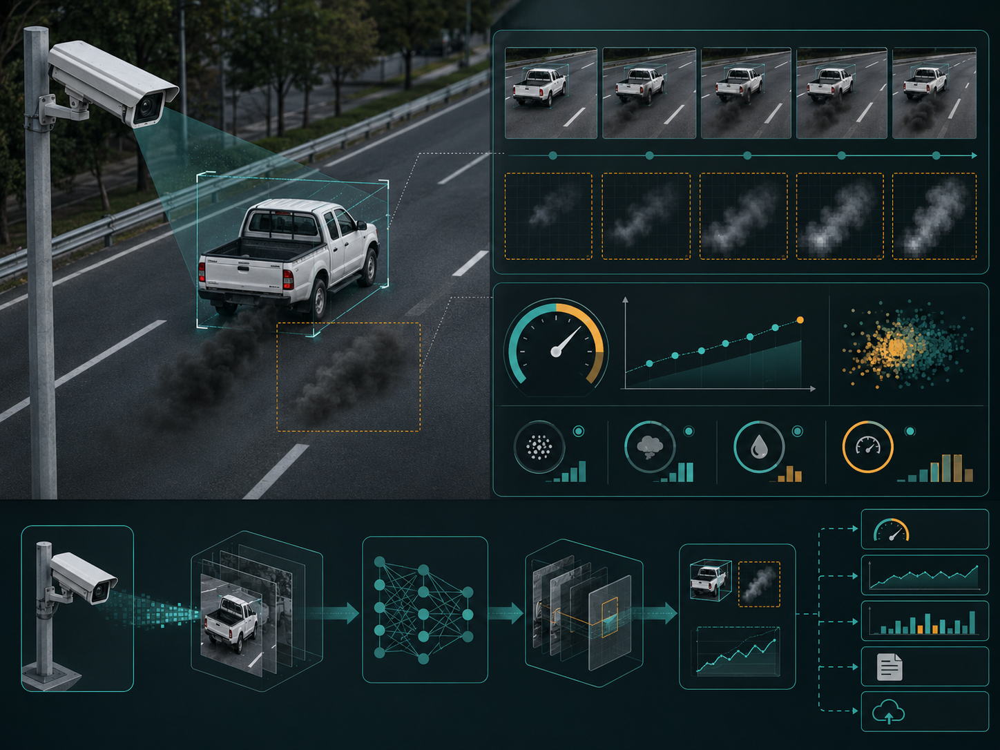
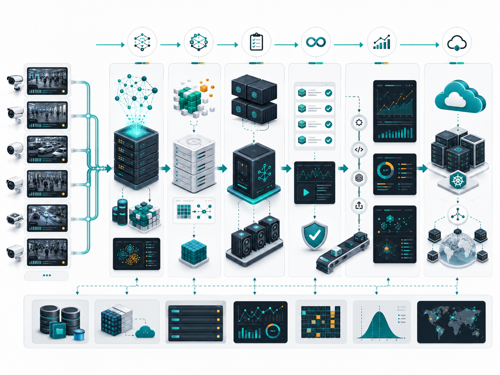
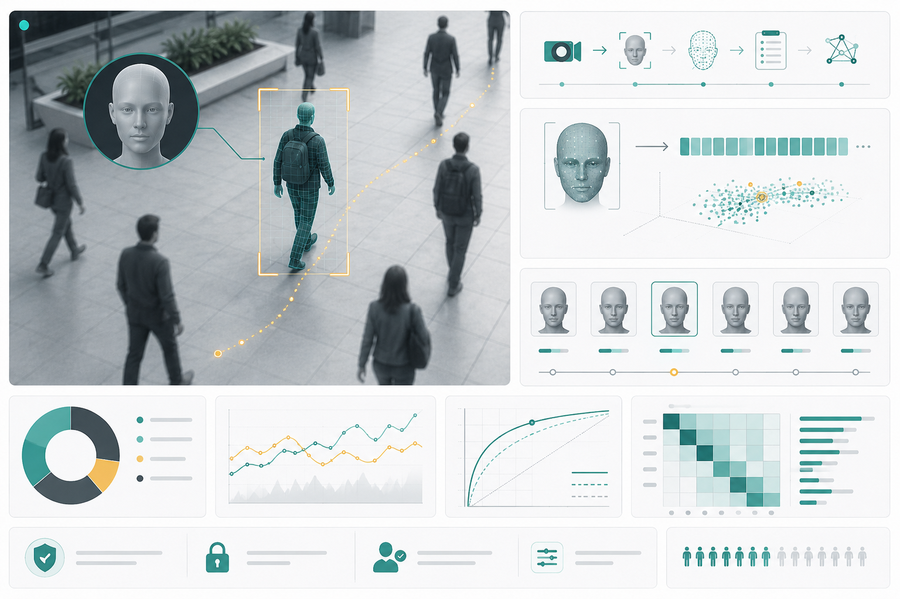
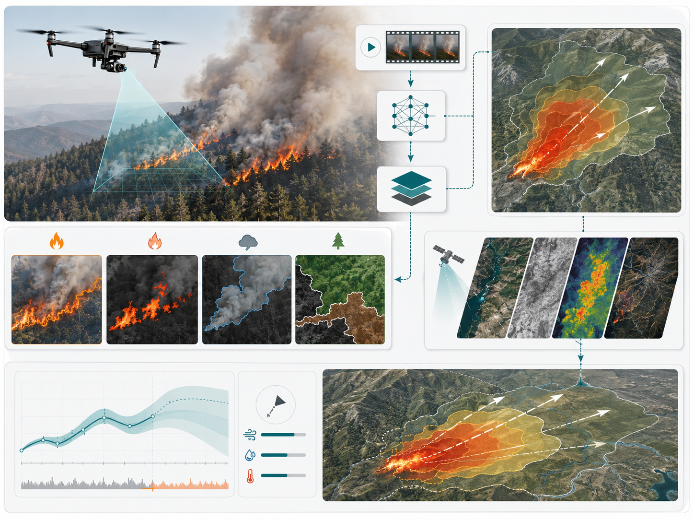
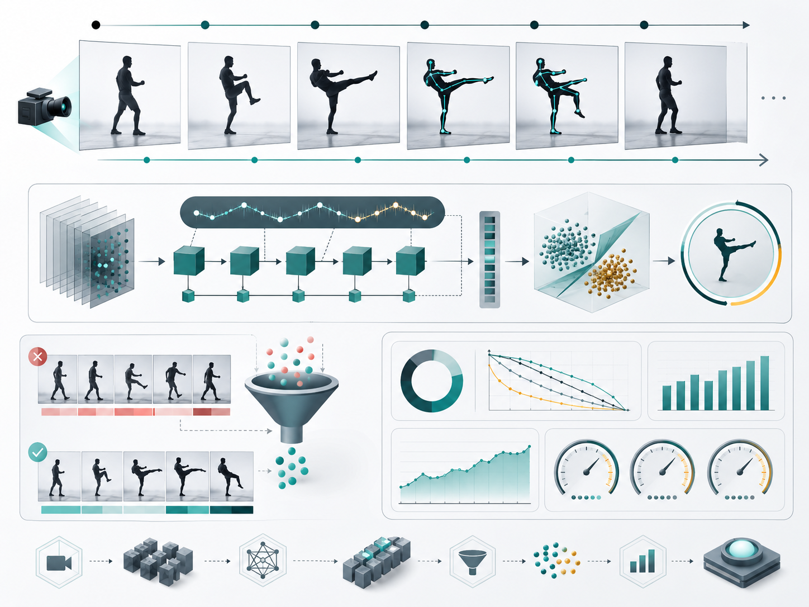
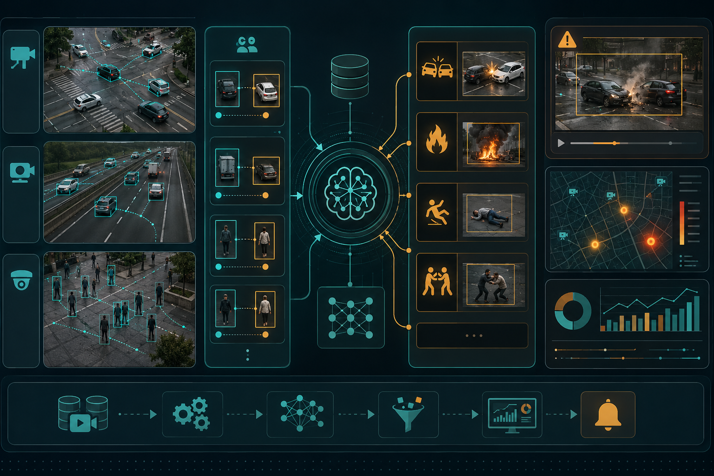
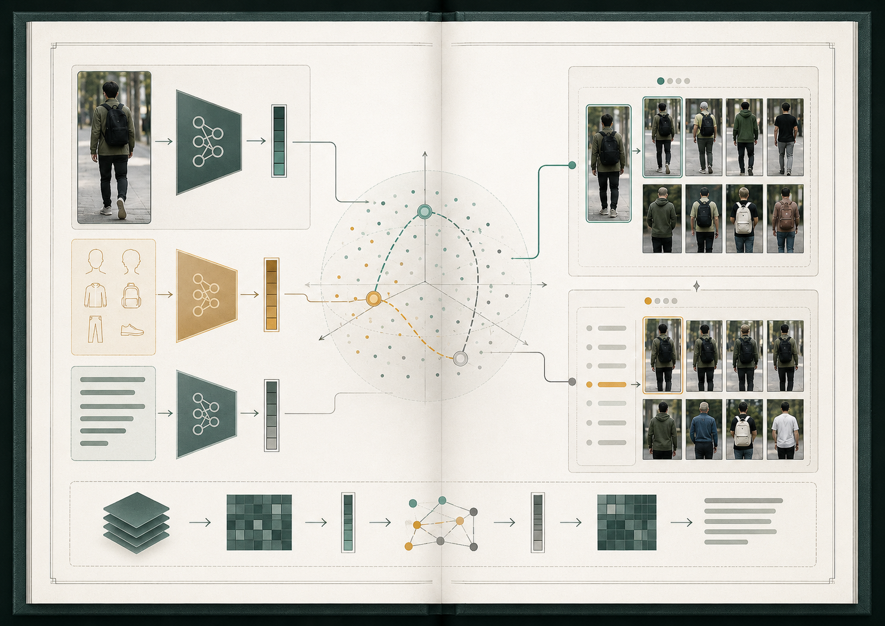

Asian Institute of Technology, Pathumthani, Thailand
- Machine Learning Developer - Full time, current position
- Software Developer - Full time, after graduation
- Graduate Research Assistant - Internship
Machine Learning Developer
I build research-driven AI systems for surveillance video analytics, Thai-language video search, computer vision, and on-premise model serving. My work bridges PoC research, production APIs, evaluation, and deployment support.
Current AI Center Unit developer at Asian Institute of Technology, with roles spanning machine learning development, software development, and graduate research assistance.
Selected professional AI and research software work, focused on video understanding, multimodal retrieval, and deployable analytics systems.
Thai-language surveillance video search PoC using generative AI, on-premise LLM serving, vision-language models, fine-tuning, and vector databases.

Research software and web video analytics for black-smoke detection, screening, and multi-frame emissions analysis with ENTEC, NSTDA.
Tollway analytics for wrong-way driving, speeding, illegal parking, unexpected objects, long-distance falling-object detection, and vehicle length classification.

AI service tasks, model training, optimization, hosting tests, CI pipeline upgrades, automated evaluation, reporting, and service patching.

Analytics-side ownership covering face detection, tracking, recognition integration, evaluation, and deployment support.

Wildfire component classification and segmentation from drone video, with forecasting support using empirical models and satellite data.

Action recognition post-processing improvements to reduce fall detection false positives and evaluate system performance.

Accident detection logic with tracked object-pair reasoning using Qwen 3.5, plus VLM scene detection for abnormal surveillance events.

Transformer-based multimodal system integrating text and image encoders for identity processing, re-identification, and text-based person search.
Data science, artificial intelligence, and science foundation with scholarship and academic award recognition.
M.Sc. Data Science and Artificial Intelligence, GPA 3.7/4.0 | Graduated May 2024 | Hisamatsu Prize recipient.
Bachelor of Science, GPA 3.60/4.0 | Graduated January 2021 | YSTP research scholar and full scholarship recipient.
Verified professional credentials and digital badges.
Open a printable HTML version and use browser print/save-as-PDF, or download Markdown for agent review.
Available for AI, video analytics, and applied machine learning conversations.
Machine Learning Developer
ผมพัฒนาระบบ AI เชิงวิจัยและใช้งานจริงสำหรับ video analytics, การค้นหาวิดีโอภาษาไทย, computer vision และ on-premise model serving โดยเชื่อมงาน PoC, API, evaluation และ deployment support เข้าด้วยกัน
ปัจจุบันทำงานใน AI Center Unit, Asian Institute of Technology ครอบคลุม Machine Learning Development, Software Development และ Graduate Research Assistance
ผลงาน AI และ research software ที่เน้น video understanding, multimodal retrieval และระบบ analytics ที่พร้อมนำไปใช้งาน
PoC สำหรับค้นหาวิดีโอกล้องวงจรปิดด้วยภาษาไทยโดยใช้ Generative AI, on-premise LLM serving, vision-language models, fine-tuning และ vector database
ซอฟต์แวร์วิจัยและเว็บแอป video analytics สำหรับตรวจจับ คัดกรอง และวิเคราะห์ควันดำจากยานพาหนะร่วมกับ ENTEC, NSTDA
ระบบวิเคราะห์ทางพิเศษสำหรับขับย้อนศร ขับเร็ว จอดผิดกฎหมาย วัตถุแปลกปลอม วัตถุตกหล่นระยะไกล และจำแนกความยาวรถ
งาน AI service, model training, optimization, hosting tests, CI pipeline, automated evaluation, reporting และ service patching
รับผิดชอบฝั่ง analytics-side ครอบคลุม face detection, tracking, recognition integration, evaluation และ deployment support
จำแนกองค์ประกอบไฟป่าและ segmentation จากวิดีโอโดรน พร้อมสนับสนุน forecasting ด้วย empirical models และข้อมูลดาวเทียม
ปรับปรุง post-processing ของ action recognition เพื่อลด false positives ในการตรวจจับการล้ม และประเมินประสิทธิภาพระบบ
ระบบ accident detection ด้วย tracked object-pair reasoning และ Qwen 3.5 รวมถึง VLM scene detection สำหรับเหตุการณ์ผิดปกติในกล้องวงจรปิด
ระบบ Transformer-based multimodal ที่ผสาน text encoder และ image encoder สำหรับ identity processing, re-identification และ text-based person search
พื้นฐานด้าน Data Science, Artificial Intelligence และวิทยาศาสตร์ พร้อมทุนและรางวัลทางวิชาการ
M.Sc. Data Science and Artificial Intelligence, GPA 3.7/4.0 | สำเร็จการศึกษา พฤษภาคม 2024 | ได้รับรางวัล Hisamatsu Prize
Bachelor of Science, GPA 3.60/4.0 | สำเร็จการศึกษา มกราคม 2021 | ได้รับทุน YSTP และทุนเต็มจำนวนจากมหาวิทยาลัย
ใบรับรองวิชาชีพและ digital badges ที่ตรวจสอบได้
เปิด HTML เพื่อพิมพ์หรือบันทึกเป็น PDF ผ่าน browser หรือดาวน์โหลด Markdown สำหรับ agent review
พร้อมพูดคุยเรื่อง AI, video analytics และ applied machine learning